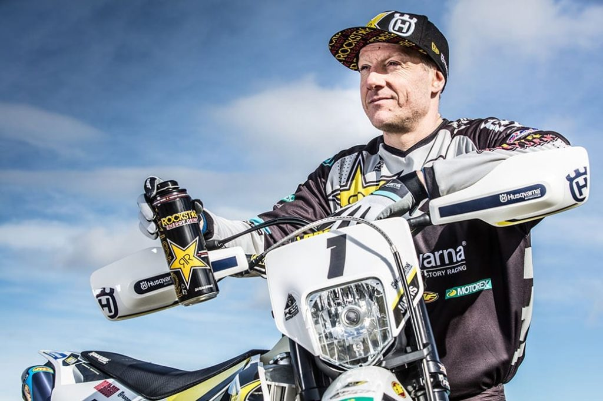
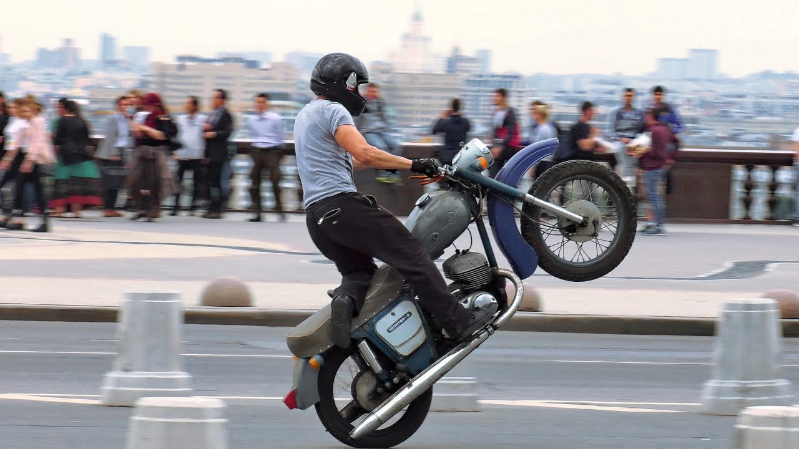

Статус: Эндуро-гонщик
Выигрывал чемпионат «Скотта» 9 раз, больше, чем кто-либо когда-либо выиграл его за свою 100-летнюю историю.
Родился 21 апреля 1975 (47 лет)

Статус: stunt rider
Первое мое вилли было со светофора на карбюраторном 919 фаере с газа, в разгон. Это было уже на второй сезон после покупки мотоцикла, до этого не ездил на мотоциклах вообще.